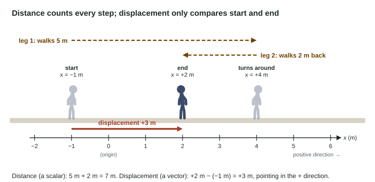

Scalars and Vectors on a Line
Scalars have a size only; vectors have a size and a direction, which along a line is the sign.
Part 1 · Hook
Why this matters
Part 2 · Before you start
What this builds on
Part 3 · Prerequisite check
Quick check before you start
1. What is 350 cm in meters?
- 3.5 m
- 35 m
- 0.35 m
- 3500 m
Show the answer
1 m = 100 cm, so 350 cm × (1 m / 100 cm) = 3.5 m.
- Correct: 3.5 m:
- 35 m:
- 0.35 m:
- 3500 m:
2. Which is the SI unit of time?
- second
- minute
- hour
- millisecond
Show the answer
The SI base units are the meter, the kilogram and the second.
- Correct: second:
- minute:
- hour:
- millisecond:
Part 4 · See it
See it first

Part 5 · Step by step
How it works, step by step
- You pick an origin and a positive directionevery position along the line becomes one signed number, x, in meters
- An object moves from one position to anotherits displacement is the final position minus the starting position, with a sign for direction
- The object turns around along the waythe distance keeps growing, but parts of the displacement cancel, so the distance is larger
- Several displacements happen one after anothertheir vector sum is found by adding the signed values
Part 6 · Key ideas
Key ideas
- A scalar has a size only (distance, speed, time). A vector has a size and a direction (position, displacement, velocity).
- Choose a coordinate system: an origin and a positive direction. Then a position is one signed number, x.
- Displacement = final position − starting position. Distance = the total length of the path. They match only for a trip in one direction.
- Speed is how fast; velocity is how fast and which way. Along a line the sign of the velocity is the direction of motion.
- Add vectors on a line by adding signed values: +320 m and −485 m give −165 m.
Part 7 · Misconception
A common mistake
The wrong idea: A negative velocity means the object is slowing down, and a negative position means it is moving backward.
What actually happens: The sign of a velocity only gives the direction of motion: −4.2 m/s means 4.2 m/s in the negative direction. A negative position only says which side of the origin the object is on.
Part 8 · Check yourself
Check yourself
Exam-style questions. Anything you miss goes into your review queue.
Diagram
A walk along a hallway
Tape marks every meter along a straight hallway, with positive to the right. Mia starts at x = +2 m, walks to the 7 m mark (leg 1), turns around and walks to the 0 m mark (leg 2). The walk takes 20 s in all.
Key: dashed arrows show the path of each leg; the faded figure marks the start.
1. What total distance does Mia walk?
Type a number in m.
Show the answer
Distance adds the length of every leg, with no signs: 5.0 m (from 2 m to 7 m) + 7.0 m (from 7 m to 0 m) = 12 m.
- Answer: 12 m
2. What is Mia's displacement for the whole walk? Use a negative number for a displacement to the left.
Type a number in m.
Show the answer
Displacement is the final position minus the starting position: 0 m − (+2 m) = −2.0 m. The minus sign says it points left.
- Answer: -2.0 m
3. How does the size of Mia's displacement compare with the distance she walks?
- It is equal, because both describe the same walk
- It is larger, because displacement includes a direction
- It is smaller, because displacement is measured in a different unit
- It is smaller, because she reversed direction partway
Show the answer
Distance is 12 m; the displacement is −2.0 m, size 2.0 m. Turning around makes the displacement smaller than the distance.
- It is equal, because both describe the same walk: They match only for a trip in one direction. Mia turned around, so the two differ.
- It is larger, because displacement includes a direction: A direction does not add size. The size of a displacement can never be more than the path length.
- It is smaller, because displacement is measured in a different unit: Both are measured in meters; the difference comes from turning around, not from units.
- Correct: It is smaller, because she reversed direction partway: Right: the 5 m out and most of the way back cancel in the displacement, but every meter counts toward distance.
4. During leg 2, what is the sign of Mia's velocity?
- Positive, because she is still at positive positions
- Positive, because speed is a positive number
- Negative, because she moves toward smaller x
- Zero, because she ends up back near the start
Show the answer
With right as positive, moving left means the velocity is negative, even while her position is still a positive number.
- Positive, because she is still at positive positions: The sign of the velocity depends on the direction of motion, not on whether the position is positive.
- Positive, because speed is a positive number: Speed is the size of the velocity and has no sign; the velocity has the sign of the direction.
- Correct: Negative, because she moves toward smaller x: Right: her position decreases during leg 2, so her velocity points in the negative direction.
- Zero, because she ends up back near the start: She is moving the whole time during leg 2; a zero velocity would mean she stands still.
5. A bus drives 235 m north along a straight street, then 410 m south. Taking north as positive, what is its total displacement?
Type a number in m.
Show the answer
Add the displacements with signs: +235 m + (−410 m) = −175 m, that is, 175 m south of the start.
- Answer: -175 m
6. Two cyclists ride along the same straight road at 6.0 m/s, one heading east and one heading west. Which statement is correct?
- They have equal speeds and equal velocities
- They have equal speeds but different velocities
- They have different speeds but equal velocities
- They have different speeds and different velocities
Show the answer
Velocity is a vector: +6.0 m/s and −6.0 m/s (east positive) are different velocities with the same speed, 6.0 m/s.
- They have equal speeds and equal velocities: Velocity includes direction; opposite directions mean different velocities.
- Correct: They have equal speeds but different velocities: Right: speed has no direction, so it matches; velocity includes direction, so it differs.
- They have different speeds but equal velocities: Both cover 6.0 m each second, so their speeds are equal, and their velocities point opposite ways.
- They have different speeds and different velocities: Their speeds match: both are 6.0 m/s. Only the directions differ.
Part 9 · Summary
Summary
Part 10 · Up next
What comes next
Part 11 · Connections